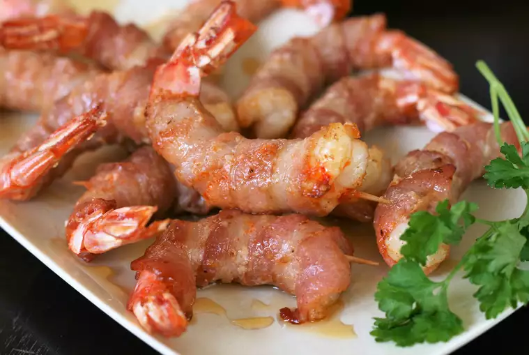

Air Fried Bacon Wrapped Shrimp

Simple to put together with only 4 ingredients, but big on flavor! I like to use "extra jumbo" size shrimp, which are 16-20 per pound. Cutting the bacon lengthwise into narrow strips makes it easier to wrap. Refrigerating the shrimp, as well as using thin-cut bacon, will prevent the shrimp from overcooking in the time it takes to crisp the bacon.
Ingredients
- 16 jumbo shrimp
- 3/4 tsp cajun seasoning
- 8 strips thin sliced bacon, cut in half
- 16 toothpicks
- 2 tbsp hot honey
Directions
- Place shrimp on a plate and sprinkle both sides with Cajun seasoning. Wrap each shrimp with 1 narrow strip of bacon and fasten with a toothpick. Refrigerate for 25 to 30 minutes.
- Preheat the air fryer to 400 degrees F (200 degrees C).
- Air-fry shrimp for 3 minutes. Flip and continue cooking until bacon is lightly crispy, 4 to 5 minutes more. You may have to do 2 batches depending on the size of your air fryer.
- Remove shrimp to a plate and drizzle with hot honey. Serve immediately, being watchful of any toothpicks.